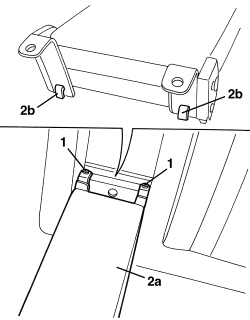

7050B18 REAR SEAT ARMREST - R+R
- Path
- Procedures > 70 FITTINGS > 7050 REAR SEATS > 7050B REAR SEAT HEAD RESTRAINT/ARMREST > 7050B18 REAR SEAT ARMREST - R+R
- Kind
- repair procedure (removal / refitting; the operation number is the code)
- Applies to
- all engines; all production periods
- Interactive page
- https://sloeber94.github.io/elrnDB-aBrrSpdr/en/#/946004184
Applies to: all engines; all production periods
 Removing
Removing
 Refitting
RefittingOp. 7050A78 SKI FLAP IN REAR SEAT BACKREST - R.R.
- Also remove the ski holder flap frame.
1. Loosen the armrest fixing bolts.
2. Remove the armrest (2a) releasing the retainers (2b).

Applies to: all engines; all production periods
Refitting
Removing- Check that the armrest is not damaged.
- Place the armrest in position and attach the retainers.
- Tighten the armrest fixing bolts.
Op. 7050A78 SKI FLAP IN REAR SEAT BACKREST - R.R.
- Tighten the ski holder flap fixing bolts.